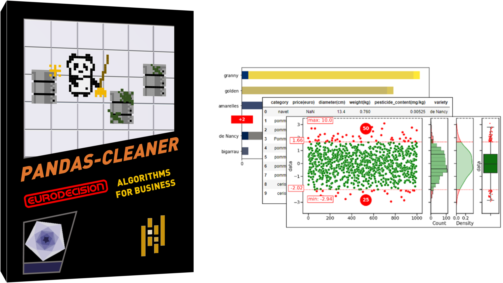

Pandas-cleaner’s documentation¶
Pandas-cleaner is a Python library, built on top of pandas, to detect, analyze and clean errors in datasets with numerical and/or categorical features.
Pandas-cleaner offers functionnalities to automatically :
detect different kind of potential errors in datasets such as outliers, inconsistencies, typos, wrong-typed …, given predefined rules or statistiscal estimations, via an easy-to-use API extending pandas,
analyze these errors, via reports and plots, to check the validity of the set and/or decide if any correction is needed,
clean the datasets, either by dropping the lines with errors, emptying, correcting or replacing bad values,
reapply the same rules to any other incoming fresh data.
Example¶
Import the package
import pandas as pd
import pdcleaner
Create an example data series
series = pd.Series([1, 5, -6, 100, 10])
Detect the errors in the series with a given method (such as bounded, iqr, zscore and many more depending the type of data…)
detector = series.cleaner.detect('bounded', lower=0, upper=10)
Inspect the result:
detector.report()
Detection report
==============================================================================
Method: bounded Nb samples: 5
Date: January 24,2022 Nb errors: 2
Time: 16:06:08 Nb rows with NaN: 0
------------------------------------------------------------------------------
lower 0 upper 10
inclusive both sided both
==============================================================================
Check the potential errors that have been detected
detector.detected
2 -6
3 100
dtype: int64
Clean the detected errors from the series using the chosen method among drop, to_na, clip , replace…
series.cleaner.clean("drop", detector, inplace=True)
series
0 1
1 5
4 10
dtype: int64
Project’s home page¶
You can visit the project’s home page.